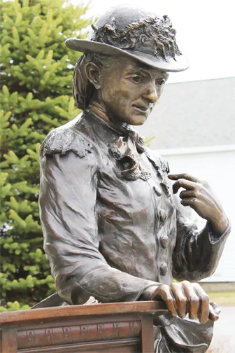

The larger-than-life-sized bronze statue of Dr Mary Walker is in front of the Town Hall of the Town of Oswego where she was born and died. The statue of Walker shows her dressed as she was during the war - a short dress over pants. She is wearing and pointing to her Medal of Honor. On the ground near the lectern is her medical bag. The lectern shows the medical symbol, a biography and a quote from Walker. On the lectern lies a copy of her book, “Hit,” and a quill for writing. The diminutive Mary Walker was less than five foot tall, but the six-foot-tall statue emphasized how she looms large in history. The lectern was added by artist Sharon BuMann who thought it was needed to show how Walker was never shy in speaking out for what she believed and discussing important issues across the globe. One of Walker’s quotes is inscribed on the side of the lectern: “I have got to die before people will know who I am and what I have done. It is a shame that people who lead reforms in this world are not appreciated until after they are dead; then the world pays its tributes.” Dr. Mary Walker tried to vote in an Oswego Town election in 1871, long before women were granted the right to vote, stating she believed the U.S. Constitution afforded that right to everyone regardless of gender. She died before the 19th Amendment gave that right to women.

Oswego Town Hall

Statue with Podium

Closeup of Dr. Mary Edwards Walker Statue